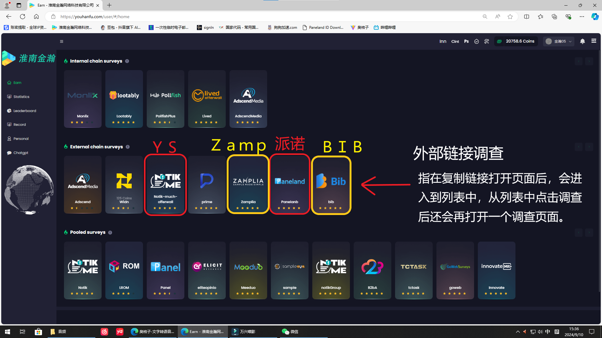

淮南金钥匙网络科技有限公司：
这是一个艰难的时代，所幸的是我们同时也处于一个互联网蓬勃的时代,互联网项目创业实现了草根逆袭：
创业就是选择正确的赛道,跟着有结果的人一起前行，才能逆水行舟。经过 6 年的摸爬滚打，付出了大量的试错成本,打造出了一套成熟完整、高产能、低门槛的运营方案。
操作不限地域和时间、居家也能办公赚钱,操作简单,一人一台电脑就可以实现轻松创业落地。
项目目前已经落地全国几十个城市,这个千亿市场,不管你是个人还是团队,期待你来一起瓜分！
金钥匙
一群有梦想的年轻人的团队
海外问卷调查介绍：海外问卷调查作为一个长期稳定的网络搬砖项目，这几年渐渐进入大家的视野。
如果你只是想单纯的了解一下项目、或者根本都没听说过这个行业，那么我建议你抽一点时间，认真的先把这篇文章看看，看完我们在针对项目的细节问题做详细沟通。
首先问卷调查行业从19世纪末20世纪初就已经诞生了,距今已经有100多年的历史。在国内也已经操作一二十年了,并不是一个新兴项目。 问卷这个行业有不少的上市公司和500强!国内互联网巨头们也都有自己的问卷公司。
海外问卷调查，顾名思义是问卷调查的一种形式。是海外企业或者商业组织为了更好地改善自己的服务或产品，通过有偿问卷的形式发布出来的市场调研。
海外问卷调查也分为三种类型，完成调查后，奖励也会通过不同的方式支付。目前主流的操作形式有口子查、站点查和渠道查。
海外问卷调查的盈利情况
海外问卷调查的个人盈利情况
淮南金钥匙网络科技有限公司：金钥匙公司是一家专注于问卷调查领域的创新型企业。总部位于淮南，业务辐射全国。
前面介绍过很多海外问卷调查“是做什么，怎么为什么做。今天来讲讲注意事项。满山货，快来做笔记吧。
目前呢，我们公司已经有二十多个渠道平台在对接了。也有了成熟的技术团队和运营团队，这就已经超越了大部分渠道查公司。大家尽可能的多去比较看看，平时购物都要货比三家“，更别提投资创业了对吧。
很多伙伴其实对做问卷做美金这种形式非常感兴趣，但是怕被割韭菜。不可否认，有这种顾虑是对的。证明你很严谨，也确实有很多同行是这样做的。做一些割韭菜的事情，也许他也是被割了然后出去招摇撞骗想要收回成本。但是不能说是这个行业不靠谱。 “合成肉”知道吧?有很多商家把合成肉当新鲜肉卖给客人。那你能说肉类市场都是骗人的嘛?不吃肉了嘛?不可能的吧。海外问卷调查的市场也是这样的。只能说是行业中有不靠谱的人，并不是说这个项目不靠谱。存在级合理嘛。 很多项目都存在着这种现象，不是说行业不靠谱，相反的，这个项目很火热，不然不会有这么多骗子热衷于以此盈利。
那么，作为新人我们应该怎么做呢? 1.了解项目本身(到底是什么) 2.选好渠道，多方对比(好渠道不怕你去比). 3.能否实地考察?(好的渠道会有专业的团队和技术人员) 4.有没有实际的教学帮助自己学习?(有些渠道只管把这个项目给你，又不提供方法教学完) （全散养） 码了这么多，看了这么久你对渠道查的了解是否更清晰了一些呢？至于最后到底赚多赚少就看你自己的努力程度了。凡事都是一分耕耘一份收获。
介绍问卷项目操作步骤：
1、首页展示

2、首页的三层渠道区别
首先我们先看网站的渠道，渠道分为上中下三个渠道也是有进题区别的
3、渠道介绍
3.1第一层->内部链接渠道
内部链接渠道：指复制链接打开后直接进入调查页面，不会再打开新的页面。
3.2第二层->外部链接渠道
外部链接渠道：指在复制链接打开页面后，会进入到列表中，从列表中点击调查后还会再打开一个调查页面。
3.3第三层->联合链接渠道
联合链接渠道：可以直接在此网页点击进入列表，再单独复制题目的地址。
4、单独渠道介绍
4.1内部链接渠道->Pollfish(小鲨鱼)和Lived
### 4.1.1 Pollfish(小鲨鱼)进题页面
4.2外部链接渠道>Widn、Zamp、Panelanb、BIB

### 4.2.1 Paneland进题页面
### 4.2.2 Zamp进题页面
### 4.2.3 BIB进题页面 
4.3联合链接渠道>Rom、TCT、GO、Inn
### 4.3.1 Rom渠道:是唯一可以多开的渠道，可以同时开五个或者十个界面进行答题
需要注意禁止同时提交 
### 4.3.2 TCT进题页面
### 4.3.3 GO进题页面
### 4.3.4 INN进题页面
问卷调查做题难不难？
当然不难,渠道时可以查询题目对应的答案的。
4.4渠道查询配额答案>Paneland、TCT、GO、Inn
### 4.4.1 Pandeland渠道可以通过复制ID到对应的网站地址中进行查询题目的人设需求
### 4.4.2 TCT查询配额是直接点击列表题目后面的查看,会弹出配额的窗口界面
### 4.4.3 GO查询配额和TCT相同,点击列表题目后面的查看会弹出对应题目的配额需求

### 4.4.4 INN查询配额并非点击查看,而是复制题目最前面的ID
回到渠道首页,点击右上角的INN查询功能,复制INN的题目ID进行详细查询
### 4.4.5 INN复制题目ID
### 4.4.6 回到渠道首页,点击INN查询功能
### 4.4.7 INN配额界面
个人版和团队版
1.海外问卷调查个人版怎么做？
做这个项目，需要的是时间和耐心，要能坐得住，因为整个流程基本都是在重复一个动作，类似在网络上搬砖。
全天 24小时任意时间都可以做,不论是兼职还是全职都是适合
所以，能不能做好这个项目，关键在于你自己能不能投入时间、精力去干，至于问卷资源、操作技术这些东西我们都会帮你搞定，确保有资源可做，确保教会操作。
渠道查最大的优势就是稳定，这个稳定一方面是问卷资源丰富，另一方面是确保你账号的稳定，你只需要踏踏实实地去做，就会有实实在在的收益!
新手一般1、2天就可以独立操作,但想要像老司机、能熟练操作,需要2、3个星期的沉淀,用来熟悉操作流程、提升做问卷的速度熟悉各种类型的问卷题型
在操作熟练的情况下,一天8个小时,平均收入在 50-80美金,也就是三五百块钱/天。
2.海外问卷调查团队版怎么做？
第一种，带着你的团队、直接在我的平台里做问卷。我的平台稳定运行这么多年，技术非常成熟，上手就可以做。
我根据你做的渠道不同，按照不同的日期给你结算，全部是现金结算，不搞礼品卡
第二种，帮你独立搭建网站，做一个属于你自己的网站，并对接好渠道，这样海外公司直接结算到你自己的账户，不用再经过我。
每个账号做完题、马上就会知道结果，几点几分、做了什么题、多少钱、成功还是失败，之的后台也会有整个团队的做题数据，平台直接就能导出，便于你去业绩监测、团队管理。
如果又想细致化了解的可以添加我的微信,每天的10:00-22:00点可以随时咨询